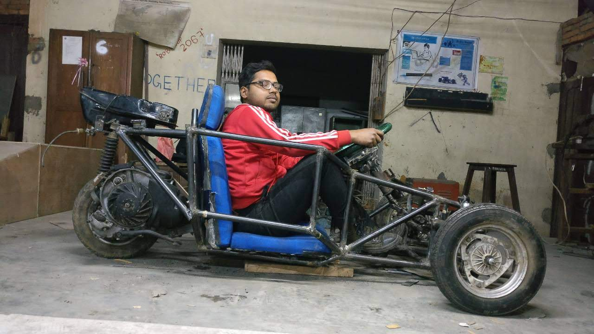
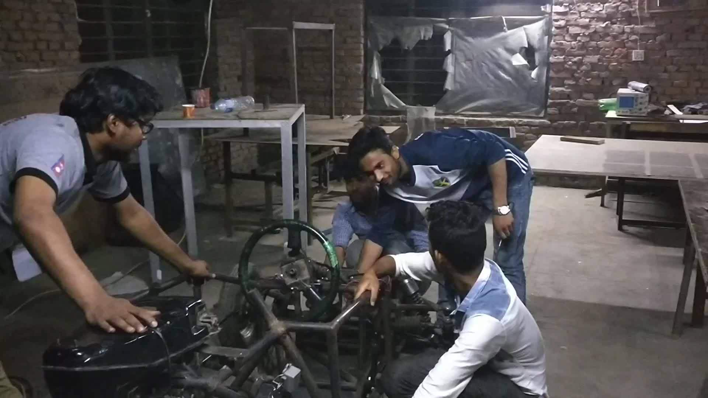
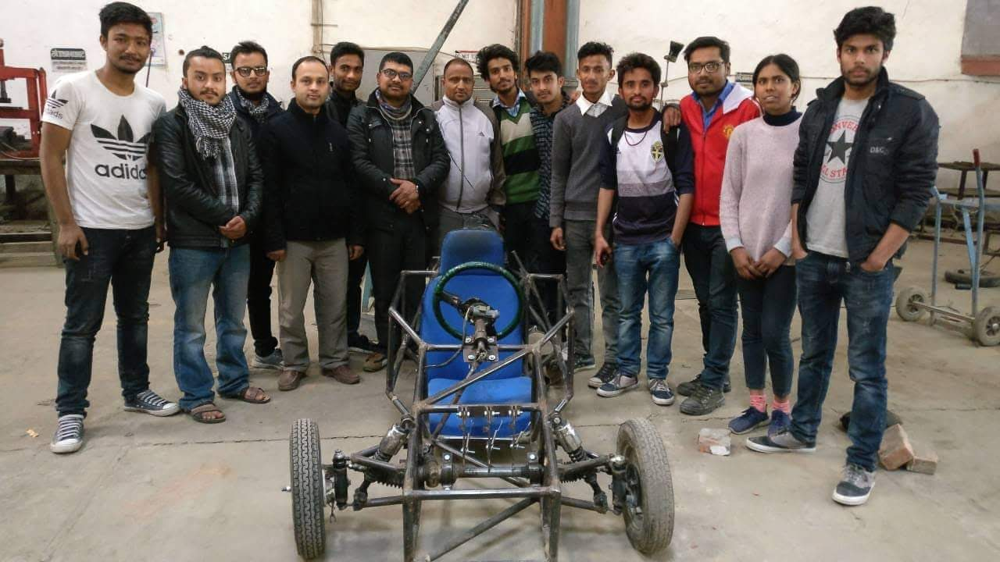

Vehicle layout and CAD
Development of the chassis concept and component layout, considering the driver’s seating position, wheel arrangement, and available space for mechanical systems.
Undergraduate engineering project · Team-built prototype
From a digital chassis model to a fabricated three-wheeled vehicle. This project brought together mechanical design, workshop fabrication, component integration, and collaborative assembly.
CAD modelling · Chassis fabrication · Steering integration · Vehicle assembly

Project background
TRICAR is a mechanical engineering project involving the design, simulation, fabrication, and assembly of a three-wheeled vehicle. Working as part of the project team, I contributed to bringing the vehicle concept into a physical prototype.
The photographs document the tubular chassis, steering arrangement, workshop fabrication, mechanical assembly, and team activities. The CAD model provides a view of the overall vehicle layout before and alongside fabrication.
Development of the chassis concept and component layout, considering the driver’s seating position, wheel arrangement, and available space for mechanical systems.
Workshop fabrication and joining of tubular frame members to turn the vehicle layout into a physical structure.
Integration of steering, wheels, seating, and other mechanical components through collaborative assembly work.
Seven images document the CAD layout, chassis fabrication, component integration, and team activities. Select an image to view the original in this tab.

The CAD model shows the tubular frame, three-wheel arrangement, seating position, and steering layout, providing a reference for fabrication and component placement.

The fabricated chassis with its front wheels and steering rack installed. This view highlights the frame members and mechanical connections at the front of the vehicle.

Welding work during chassis fabrication, documenting the transition from individual frame members to an assembled vehicle structure.

Team members working around the chassis and steering area during component installation and assembly.

The side view shows the seating position, steering wheel, tubular structure, and rear wheel arrangement within the assembled prototype.

A workshop photograph of the team with the vehicle, documenting the collaborative effort behind its development and assembly.

The project group alongside the assembled prototype. The exposed frame makes the vehicle’s component layout and construction visible.